By Elizabeth Dunlop Richter
Our city’s major museums all have their current exhibits; the rest of their collections are packed away, stored in museum basements or warehouses. Some of these items will never make it into a current exhibit. It occurs to me that we are individually not much different. Just about everyone has a family “museum” of sort. It may be a vacation souvenir sitting on a side table, or a collection of vintage silver, or if you’re fortunate, a few Old Master paintings. At our house, like the Art Institute or the Chicago History Museum, we have two distinct museums, one for public appreciation and one definitely not ready for prime time.. in the basement.
In our dining room, we have some interesting family artifacts in a vitrine: a pair of Victorian opera glasses, Chinese snuff bottles, Native American dolls, etc. But one could argue that the more unusual and, in many ways, more challenging artifacts live in our basement on glass-fronted shelves for our personal delight or dismay, depending on your perspective. Clearly, some items have special meaning to my husband Tobin and some to me, but none to both of us, hence their location. Tobin has announced that he is the official curator of the Basement Museum, for which I am thankful; the basic issue is that either of us could happily eliminate half the stuff in the case.
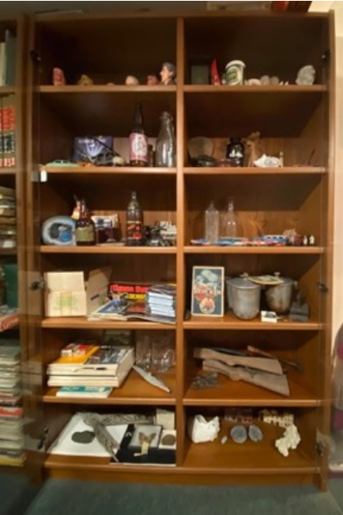
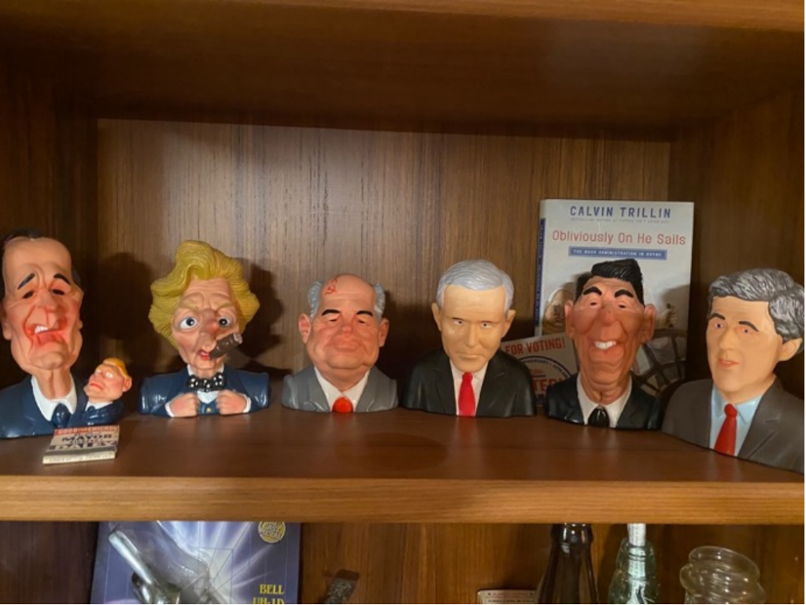
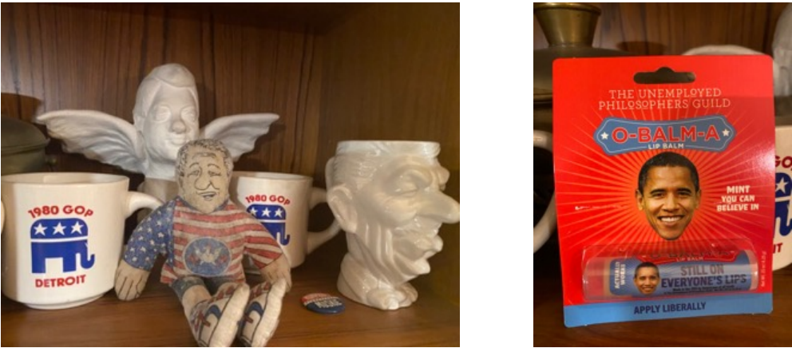
Travels of course allow many souvenirs to creep into our houses. Sometimes it’s hard to recreate the mindset that demanded “I must have that!” Many historic houses and monuments sell painted wood two-dimensional models in their gift shops. For some reason, we acquired a number of these over the years. They present the classic problem…what to do with them once you get home? We have the Indianapolis Union Station, the Gaylord Building in Lockport, Illinois, and the San Francisco plantation in Louisiana. There may be others in our Christmas decoration boxes.
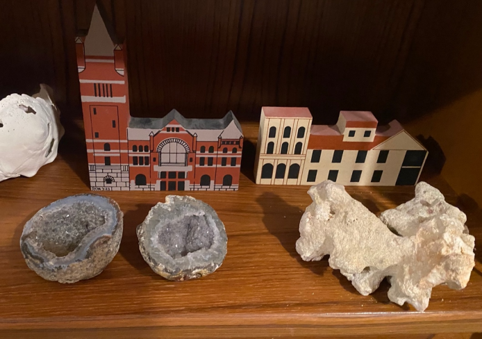
Some travel souvenirs I must claim as my choices include a carved wooden turtle box from Jamaica, a wooden elk figurine from Sweden, and a dried cactus “skeleton” I picked up in Arizona. A geode or three, favorites of my late mother-in-law, await a grandchild’s interest in geology.
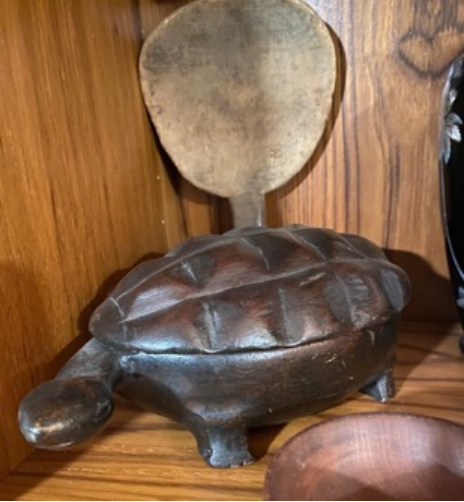 |
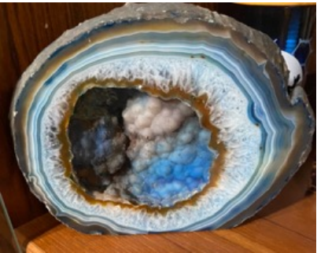 |
Admittedly, the displays do not have a professionally curated appearance. No written wall plaques explain items or why they appear together. The Jamaican turtle lives with an antique wooden butter paddle. A Vietnamese vase keeps company with a wooden Swedish elk, a Rhode Island piggy bank, and corps of engineer cufflinks.
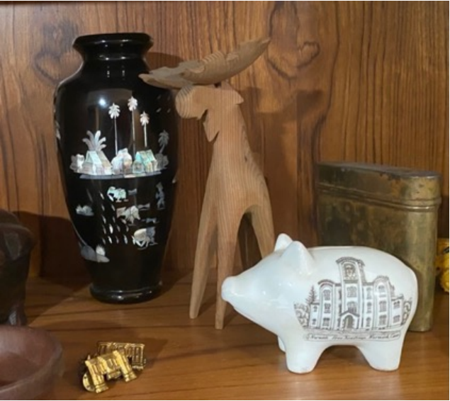
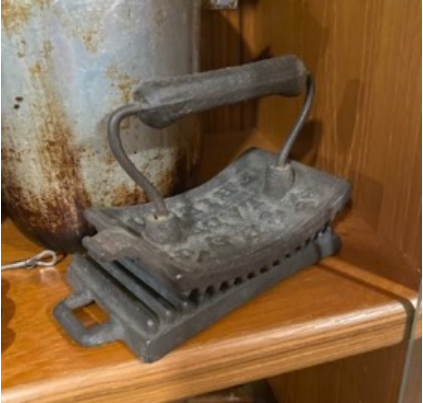
My husband’s maternal great grandfather was the foreman in a 19th century shotgun factory in Norwich, Connecticut. Our collection includes pair of wooden gunstocks handed down through the family. They are historically significant but have little value. Also accompanying the gunstocks are some of the tools used to make them, bearing his initials, JAM (John A. Mitchell); these are actually more interesting than the gunstocks. Also from Tobin’s grandparents, a ceramic piggy bank from the Norwich Free Academy, the high school in Norwich built by the gun manufacturers there to provide a free high school education for the employees of the many gun factories. That is where Tobin’s grandfather as a faculty member met Tobin’s grandmother, one of his students. They married amer she graduated from Wellesley in 1915.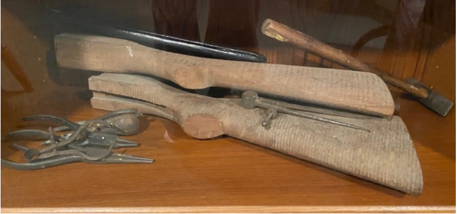
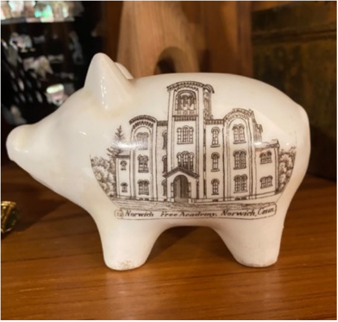
As I look through the shelves, I realize many of the artifacts are my husband’s die-cast metal toys. Well-worn Tootsie toys, cars, planes, and buses, originally produced by the Dowst brothers in Chicago, today have value only if they are in original packaging. From Tobin’s tour in Vietnam, a lacquer vase and a helicopter made of military ammunition holders by a roadside Vietnamese craftsman.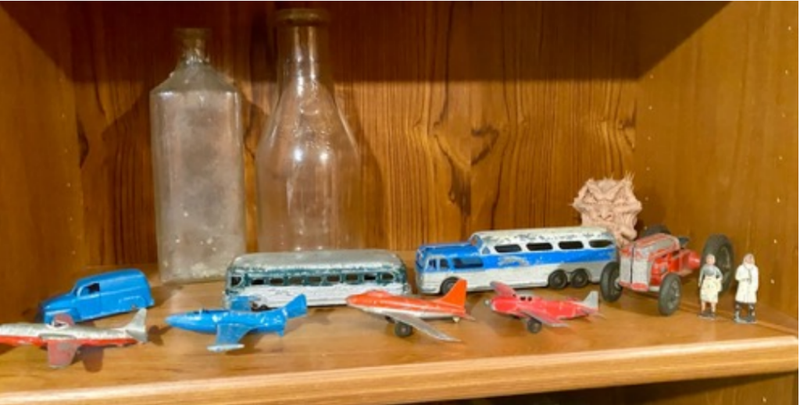
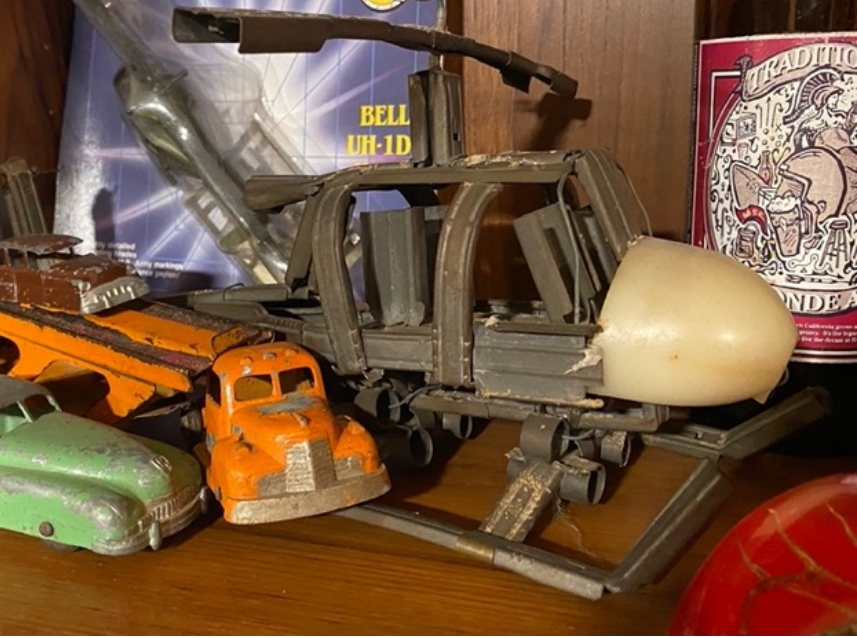
Perhaps the most “challenging” basement treasure is the set of Tobin’s grandmother’s vintage Club Aluminum pans. Not only do we have the original cookbook that accompanied them, but it turns out they were manufactured on Fullerton Avenue, just a few blocks from our current home. Club Aluminum pans were cleverly designed to fit in threes together on a single burner, connected by a single handle. The idea was to save energy by preparing three separate dishes at the same time. Unfortunately, the aluminum lacked any kind of nonstick surface and someone in Tobin’s family was not paying attention to what was cooking. The pans are thick and seemingly indestructible, but badly burned. They were supposedly designed to be so heavy that water was not needed to cook in them. The internet has many queries about how to clean Club Aluminum but no responses. Our attempts to clean and potentially try to use them have been in vain. I have banned them from the kitchen. Tobin is very attached to their historic importance (?). Yes, he’s checked on eBay. They’re worth virtually nothing.
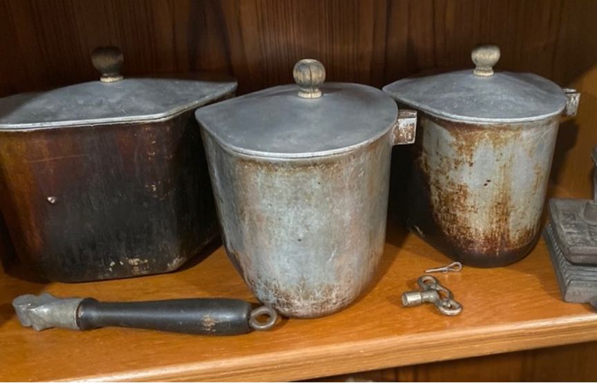
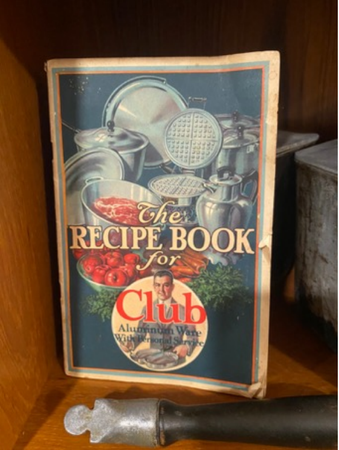
There are many more objects in this museum: some monster figures my son made in high school, old Washingtonian magazines, a piece of Pacific coral my father brought back from World War II, a Russian beer bottle, and more. But I think I’ve described enough to give you an idea of the kind of things we may all have in our basements, on shelves or more likely in boxes.
As I look more carefully at the contents of our Basement Museum, I realize that what we’ve stored here are miscellaneous objects that, if nothing else, provide a look at some interesting and eccentric chapters of our family history. That’s how they found homes in our basement and there they will stay for the foreseeable future. Perhaps the best way to preserve them is like this, in copy and in pictures, unless……
Some could probably be mounted and framed in an artistic display…a collector will leap upon the opportunity to offer us real money for what will turn out be more valuable than we think or perhaps our children or grandchildren will insist that they want us to hold on to these for their own collections…or with luck, we can find a loving home for some. Inquiries to the Deaccession Chairman are welcome and encouraged.